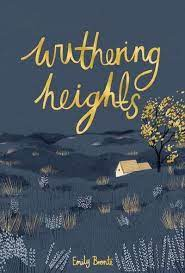

To Kill a Mockingbird takes place in the fictional town of Maycomb, Alabama, during the Great Depression. The protagonist is Jean Louise (“Scout”) Finch, an intelligent though unconventional girl who ages from six to nine years old during the course of the novel. She is raised with her brother, Jeremy Atticus (“Jem”), by their widowed father, Atticus Finch. He is a prominent lawyer who encourages his children to be empathetic and just. He notably tells them that it is “a sin to kill a mockingbird,” alluding to the fact that the birds are innocent and harmless. Rating 4.3/5 Genre : Thriller [Trigger warning: Rape]

It concerns two families of the landed gentry living on the West Yorkshire moors, the Earnshaws and the Lintons, and their turbulent relationships with Earnshaw's adopted son, Heathcliff. 4/5 Genre: Novel
